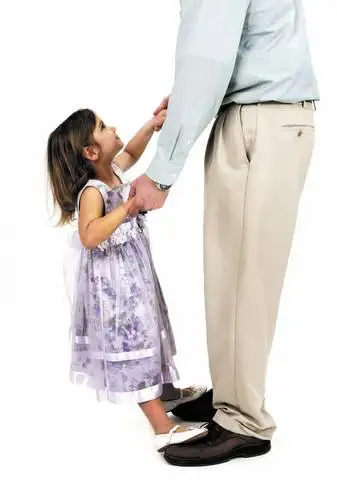

As readers of Peace Garden Mama already know, I’ve decided to fast from blogging this Lent. Which means I’ll be back at Easter, but not until then, except to post updated links to my newspaper articles over on Peace Garden Mama.
To keep y’all from drifting away completely, however, I wanted to leave you with something sweet. So I’m posting my latest Forum article (Feb. 28). The accompanying photo — a shot of my colleague Sherri’s daughter and husband — definitely put the bow on the gift of having a chance to write this piece. At the end, follow the link to a column I wrote to go with it.
Lenten blessings to all, and I’ll see you in the wake of the bunny’s bouncing tail, just after the Resurrection of our Lord!
Happy writing and living!
Roxane
 |
| The Forum newspaper/Dave Wallis |
{kind=link}
The daddy-daughter bond: Local fathers share why time spent with their little girls matters so much
FARGO – Last April, Oscar-winning actress Gwyneth Paltrow came out with a book about cooking. It reveals her favorite recipes, yes, but just as much, it details her tender relationship with her father.
In the introduction of “Her Father’s Daughter,” Paltrow credits her dad, “a supreme gourmand who had a deep love of great food and wine,” with instilling in her a passion for food and food preparation.
“He was the love of my life, and I always feel closest to him when I’m in the kitchen,” writes Paltrow, whose father died in 2002. “I can still hear him over my shoulder, heckling me, telling me to be careful with the knife, moaning with pleasure over a bite of something.”
The father-daughter relationship can be a precious one, often providing a model for a girl’s future relationships.
It wasn’t cooking but hunting that provided the initial backdrop for the bond between Fargo dad Mike Bruckbauer and his firstborn, Kellie.
“When she was 2 weeks old, I put her in a snuggly pack and we went out scouting for deer,” Bruckbauer said. “We walked around the woods for about an hour that day.”
Off they would go on a regular basis – her tiny hand wrapped around his pointer finger – until Kellie reached junior high. At that point, her interests changed, and the two began singing and playing guitar together with the rest of their musical family.
Along with other social activities, Kellie’s high-school years included an annual date with her father to the Shanley High School Generations Dance, which generally involves dad-daughter and mothers-son pairings, along with dance competitions. The two won the swing dance-off all four years.
Bruckbauer said his perspective on parenting developed largely through seeing his mom working hard to pull off single parenting. The oldest of five siblings, he lost his dad to an untimely death at 37 when he was only 11.
“I think my strength has come from not having a dad and seeing what that can do to a family, and not wanting the same thing for my family,” he said.
Though also a father of two sons – Danny, 16, and Phillip, 22 – Bruckbauer said there’s something special about the father-daughter relationship. With boys, he surmised, the fatherly role seems more bent on formation. “With daughters, it’s more about just being there, trying to be understanding, listening and consoling.”
A shining moment of fatherhood for Bruckbauer happened two years ago when Kellie, now 26, married Leon Knodel, a teacher and basketball coach at Fargo’s Sullivan Middle School. Though putting her hand into another’s was a little scary for a dad, Bruckbauer said, he also experienced a deep sense of satisfaction knowing he’d done his job well.
“When they’re young, that’s the time when you lay down those values, and you hope they live that lifestyle and make good decisions,” he said, noting that she made a great choice in Knodel.
Now, Bruckbauer has had the additional pleasure of watching Kellie become a mother to her daughter, Lillie, and said being granddad has been a “full circle,” wonderful experience.
Outnumbered
Pat Nistler, another Fargo father, grew up with both brothers and sisters – eight siblings in all – but has lived most of his life outnumbered by females, including Brenda, his wife, and daughters Sara, 18, Rachel, 16, and Katie, 14. A fourth daughter, Johanna, died shortly after birth in 2006.
Nistler said he’s been asked often whether he wishes he’d have had a boy. “Sure, I would have loved it. But would I trade one of my girls for a boy? Of course not!” he said. “It’s the spirit, the personality of the person they become; that’s what you grow to love.”
Some of his favorite memories of fatherhood took place in the earliest years when Brenda worked as a teacher, and his work schedule allowed him one day a week with his daughters.
“We would run to Hardees and do a date with dad back when they could barely see over the table, or we’d go to the mall and walk around or just sit in the backyard and play in the garden,” he said. “Most of the time everyone got out of it unscathed. And if they wanted to do dress-up day, well, then you did dress-up day.”
As the girls got older, Nistler said, things became a little more awkward. “All of a sudden, dad’s a boy, so there’s more of a question of, ‘Uh, Dad, where’s Mom?’ There’s a hesitancy in the way they perceive you.”
He also acknowledged differences in the way one might parent a son versus a daughter. “Most of the time you just check to see if the boy is breathing and you might be acknowledged by a grunt from time to time,” he said. “With girls, everything can be a hysterical fit.”
But regrets, so far anyway, are few. “I got to be a dad. What an awesome experience that has been,” Nistler said.
Nistler said even though his daughters are teenagers, he considers them all good kids. “I’ve got to think that I was a part of that,” he said. “And in the future they can continue to come to me and know that I’m always available.”
A break for breakfast
Matthew St. John, pastor at Bethel Evangelical Free Church, is a father to two daughters; Emily, 15, and Katy, 11.
Ever since Emily was in preschool, he began taking her on weekly breakfast dates. He started doing the same with Katy around the same age, but on a different day.
It’s usually a simple outing, maybe to a fast-food restaurant, but it affords them time to catch up and exchange thoughts.
“I always ask them, ‘Tell me how your heart is,’ and they’re just brutally honest. We talk about sex, boys, expectations about life, our dreams, our hurts, our joys,” he said. “And there are times when I know there’s something on their heart and mind that they don’t want to talk about, and that’s OK. The default is that we do talk, we have trust, and they might eventually share, or maybe not.”
Throughout the years, they’ve only missed a date or two due to travel or illness, he said, but in his mind, the weekly outing is a non-negotiable. “If I end up having to be available for something else, it’s got to be catastrophic, because I have breakfast with my daughters.”
St. John also started a one-time tradition with Emily when she turned 12 that he’ll continue with Katy, involving not breakfast burritos and jeans, but a fancy restaurant and their finest clothing.
“With Emily, she and (her mom) picked out a ring, and I presented it to her that night. Some call it a purity ring, but it’s so much more than that. What I said to her is … that I would lay down my life for her, and I wanted her permission to be able to help shape and guard her heart.”
St. John names his relationship with God as the model for how he parents his girls, adding that he and his wife, Christa, pray with them every morning and evening. “Not to be pious or weird, but it really is a kind of glue that keeps us in sync with one another and keeps our hearts tender.”
Other influences have entered in as well, including a book he read by Steve Farrar years ago called “Point Man.” The book likens the guy at the front of the line in war and his responsibilities for everyone behind him to the role of the father and his family.
“Strong Fathers, Strong Daughters” by Meg Meeker is another he highly recommends.
Lasting impact
Sara, the oldest of the Nistler trio, remembers when she was in kindergarten and her mother became very ill, forcing her dad to take on both roles.
“I would wake up really early in the morning, go upstairs and get dressed and dad would make me breakfast and we’d read the paper together, and he would drill me in math before we left,” she said. “He did a good job of taking care of us when she wasn’t able to.”
Kellie said now that she’s a mother, her appreciation for her father’s role in her life has grown.
One incident in particular stands out – a time she “jackknifed” his boat trailer trying to drive it down the boat landing. Rather than getting overly upset or making her feel inept, Kellie said, her dad kept his cool, and even gave her another chance the next day, this time offering more guidance to help her feel confident, and not like she’d failed.
“I think it shaped me as a person, being able to look up to him as a role model. He was so laid back and that helped me learn how to handle frustrations and overcome big things,” she said.
“It wasn’t like we sat down and had these heart-to-heart cry fests, but I think just that feeling of being safe and feeling protected and having that balance of him being there was so important.”
[To see column about my first dance, go here…]